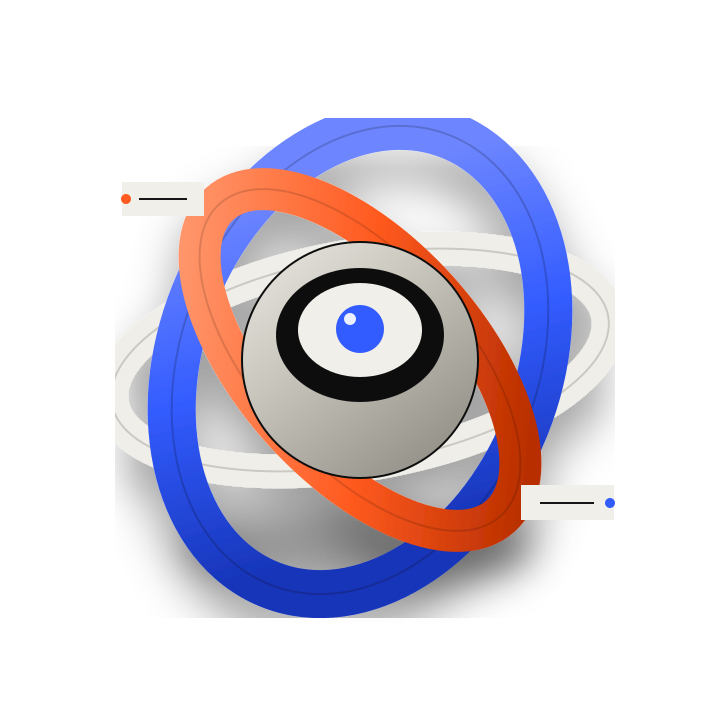

01
Assemble
Layers settle into a readable starting composition as the section enters the viewport.
A small interaction system built around three inputs: pointer, scroll and click. The artwork stays two-dimensional; depth comes from timing, perspective and layered movement.

The same graphic is re-composed instead of swapping between pre-rendered scenes. That keeps the interaction continuous and easier to integrate into a live page.
Layers settle into a readable starting composition as the section enters the viewport.
Depth separates while pointer movement adds a small parallax response without moving the page itself.
Scroll progress changes scale, rotation and spacing so the graphic can support a product narrative.
A restrained perspective shift and local highlight make a flat panel feel physical.
Animation is tied to scroll position, so the user controls the pace in both directions.
Click maps to a trigger rather than a timeline, matching the way the behavior would be authored in Rive.
The browser only needs to provide a few normalized inputs. The same contract can drive a Rive state machine, which keeps design and implementation responsibilities clear.
pointerXNumber-1 → 1pointerYNumber-1 → 1scrollNumber0 → 1focusBooleanon / offburstTriggerfireResponsive behavior, reduced-motion handling, interaction mapping and QA notes are included with the project. The artwork is layered so it can be rebuilt as a native Rive asset without changing the web-facing interaction contract.